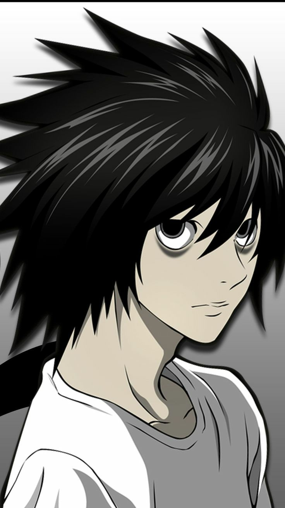

"ديث نوت" (Death Note) هو أنمي ياباني مشهور يستند إلى مانغا تحمل نفس الاسم. تدور قصته حول طالب عبقري في المدرسة الثانوية يُدعى "لايت ياجامي" يعثر على دفتر ملاحظات غامض يُسمى "دفتر الموت". هذا الدفتر يمنح حامله القدرة على قتل أي شخص بمجرد كتابة اسمه فيه مع معرفة وجهه. يكتشف لايت هذه القدرة ويقرر استخدام الدفتر للقضاء على المجرمين حول العالم، بهدف خلق عالم مثالي خالٍ من الجريمة ويصبح هو "إله العالم الجديد". لكنه يواجه عقبات كبيرة عندما يبدأ المحقق العبقري "إل" في التحقيق حول سلسلة الوفيات الغامضة التي تحدث للمجرمين. الصراع بين لايت وإل يصبح المحور الرئيسي للقصة، حيث يطور الاثنان خططًا ذكية في محاولة لتفوق كل منهما على الآخر. يتناول الأنمي قضايا أخلاقية معقدة حول العدالة، القوة، وتأثيراتها على الشخص الذي يمتلكها. الأنمي يتميز بتوتره النفسي، والتشويق في الحبكة، والشخصيات المعقدة التي تجذب انتباه المشاهدين..
ياغامي لايت هو طالب ذكي يكتشف مذكرة الموت ويقرر تنظيف العالم من المجرمين.
إل هو المحقق الغامض الذي يسعى للإمساك بـ "كيرا" (ياغامي لايت).
العودة إلى الصفحة الرئيسية